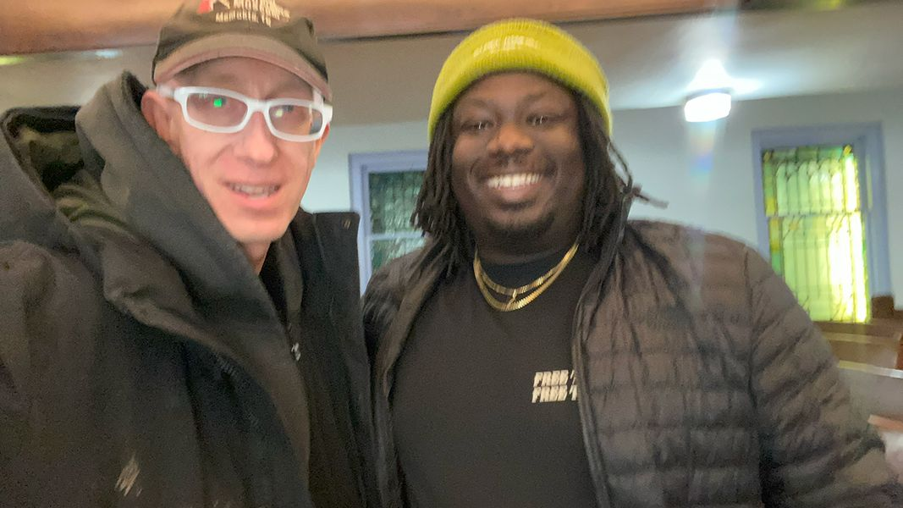

Timeline photos
Here's a picture of me and @[1537367373:2048:Imokhai Okolo]. It was taken in mid-March of this year.
Imokhai has been betrayed by his city.
Jayland Walker was murdered in extreme cold blood with 94 bullets all meant for his unarmed body.
The city of Akron did something similar to Imokhai. They looked to destroy his character. He is exactly what society wants to see our young Black people become. Highly educated. Highly paid. Folded nice and neat into the White corporate system.
But it's not good enough. Imokhai is not good enough to be on the (powerless) police oversight committee. 5 white city council men saw to that.
So then you have to ask: "If Imokhai isn't good enough what chance do I have?"
"If Imokhai won't be accepted into the white man's system why should I try? I have no chance. None of us have a chance."
You are making radical extremists, Akron. You are creating them.
You did it to Dr. N.J. Akbar... My city council opponent (a very successful white man) wrote an op-ed saying that Dr. Akbar should resign from the school board. You cancelled him.
You did it to Russ Neal. You censured him for terrifying 6 anonymous women during remote work covid times. You cancelled him.
You did it to Linda Omobien when 100 members of the the police union voted a 100% no confidence vote in her. You cancelled her.
You are radicalizing the Black community.
The message you are sending is that no Black person, no matter what level of class and accomplishment is good enough. If you dare take a stand that is contrary to one single thing the White powerful man says, you must be cancelled.
I saw a young Black man face down aggressive police who moved in on a peaceful protest on Copley Road... a place known for over policing. He yelled, "I'm gonna die about this."
I'm hearing extreme statements like this more and more. What is the point of living if you only live at the pleasure of the white man? You are no longer a human. You are now an animal. And if they want you to be animal then they are going to get an animal.